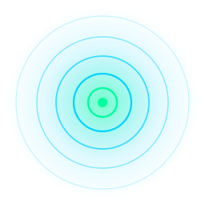
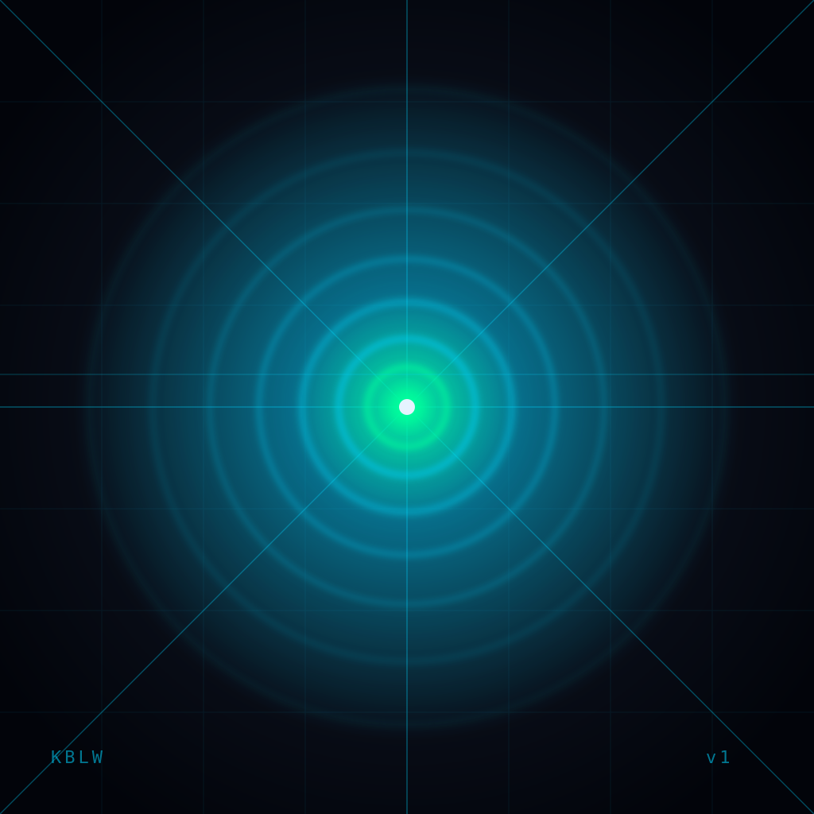
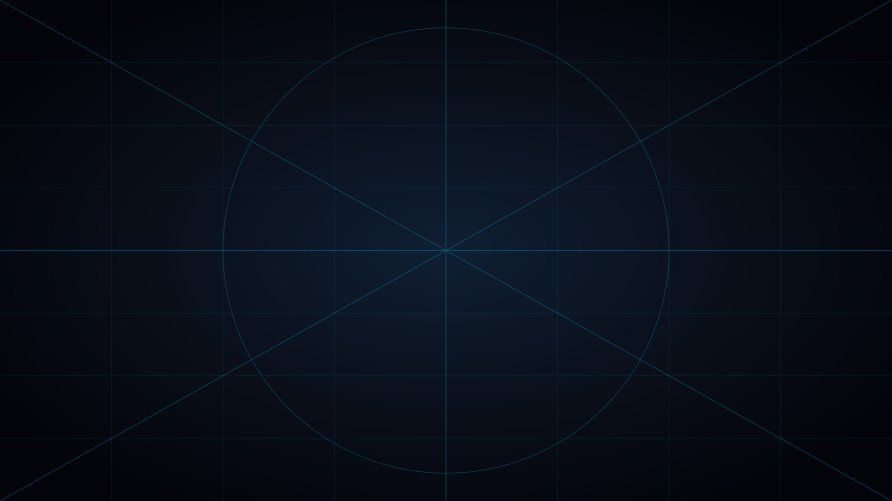
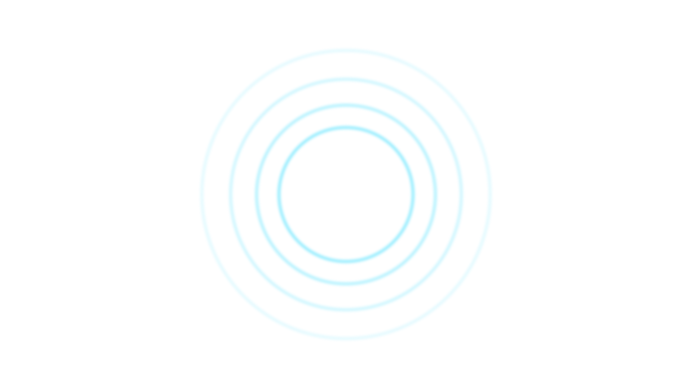
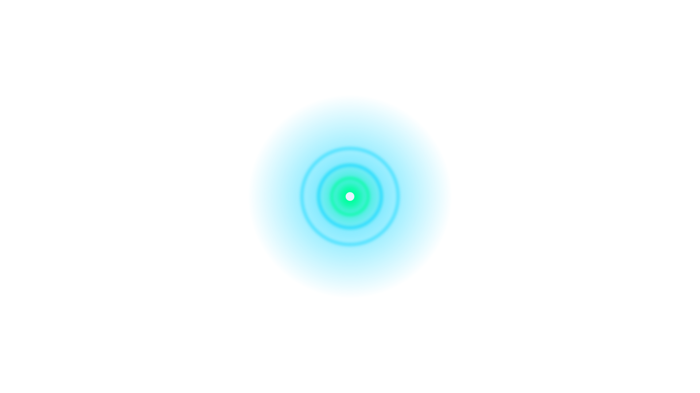

A secure WireGuard tunnel companion for Apple TV and iOS. Cool, technical, signal-driven. This document defines the visual identity and ships every asset Xcode needs to build the app.

Precise, technical, calm. We name things by what they are. No exclamation marks, no fluff. Telemetry over copy.
Concentric tunnel rings, perspective rays, fine grids, scan lines. Bright signal cores on deep navy. Mono type carries authority.
A radar console at 03:00. Quiet, alert, glowing. The interface watches the wire so you don't have to.


Reserve at least x = radius of the outer ring on every side of the mark. Never crop, rotate, or skew the mark.
Mark: 24 px on screen, 10 mm in print. Below this threshold the inner reticle fuses into the rings.

The squircle mask is applied by iOS — design at full square. The bright signal core sits at exact center; the icon stays recognizable at 29 pt (Settings).



Hover to preview parallax · 3 layers · 1920×1080
// Color+Kabelwaechter.swift import SwiftUI extension Color { // Surfaces static let kwBg0 = Color(hex: 0x05080D) static let kwBg1 = Color(hex: 0x0A0F1A) static let kwBg2 = Color(hex: 0x0F1825) static let kwBg3 = Color(hex: 0x152135) // Signal static let kwCyan = Color(hex: 0x00D4FF) static let kwSignal = Color(hex: 0x00FF9D) // connected static let kwWarn = Color(hex: 0xFFB84D) static let kwError = Color(hex: 0xFF4757) // Text static let kwText = Color(hex: 0xE6F3FF) static let kwTextDim = Color(hex: 0xE6F3FF, opacity: 0.55) static let kwTextFaint = Color(hex: 0xE6F3FF, opacity: 0.32) // Lines static let kwLine = Color(hex: 0x00D4FF, opacity: 0.35) static let kwLineDim = Color(hex: 0x00D4FF, opacity: 0.15) static let kwGrid = Color(hex: 0x00D4FF, opacity: 0.08) } extension Color { init(hex: UInt, opacity: Double = 1.0) { self.init( .sRGB, red: Double((hex >> 16) & 0xFF) / 255, green: Double((hex >> 8) & 0xFF) / 255, blue: Double( hex & 0xFF) / 255, opacity: opacity ) } }
Mono carries the brand. SF Mono ships with every Apple OS and is the production typeface in Xcode — JetBrains Mono is the web mirror. Use sans (SF Pro Text) only for long-form body copy where mono would tire the eye.
// Font+Kabelwaechter.swift import SwiftUI extension Font { static let kwDisplay = Font.system(size: 56, weight: .bold, design: .monospaced) static let kwTitle = Font.system(size: 32, weight: .bold, design: .monospaced) static let kwH2 = Font.system(size: 22, weight: .medium, design: .monospaced) static let kwLabel = Font.system(size: 11, weight: .medium, design: .monospaced) static let kwTelem = Font.system(size: 13, weight: .regular, design: .monospaced) static let kwBody = Font.system(size: 15, weight: .regular) static let kwBodySm = Font.system(size: 13, weight: .regular) } // Reusable label modifier struct KWLabel: ViewModifier { func body(content: Content) -> some View { content .font(.kwLabel) .tracking(2.2) .textCase(.uppercase) .foregroundStyle(Color.kwCyan) } }
Prefer SF Symbols set to weight regular, scale medium. Custom glyphs follow a single 1.5 px stroke at 24×24, square caps and joins.
3 / 9 px padding · 1 px border · 2 px radius · 5 px dot · uppercase, +0.1em tracking.
12 / 22 px padding · 12 pt mono semibold · +0.18em tracking · 0 radius · hover: glow 24 px.
8 px base · 4 px subdivisions · 40 px page rhythm.
0 · 2 · 6 px. Never soft-rounded. Squared corners read as instrumentation.
1 px hairline cyan @ 15% / 35% α. Corner brackets for emphasis.
// Assets.xcassets Kabelwaechter/ ├── Assets.xcassets/ │ ├── AppIcon.appiconset/ // iOS · iPad │ │ ├── icon-1024.png 1024×1024 │ │ ├── icon-180.png 180×180 │ │ ├── icon-167.png 167×167 │ │ ├── icon-152.png 152×152 │ │ ├── icon-120.png 120×120 │ │ ├── icon-87.png 87×87 │ │ ├── icon-80.png 80×80 │ │ ├── icon-76.png 76×76 │ │ ├── icon-60.png 60×60 │ │ ├── icon-58.png 58×58 │ │ ├── icon-40.png 40×40 │ │ ├── icon-29.png 29×29 │ │ └── icon-20.png 20×20 │ ├── tvAppIcon.brandassets/ // tvOS layered │ │ ├── App Icon - App Store.imagestack/ │ │ ├── App Icon.imagestack/ │ │ │ ├── Back.imagestacklayer │ │ │ ├── Middle.imagestacklayer │ │ │ └── Front.imagestacklayer │ │ └── Top Shelf Image.imageset/ │ └── Colors/ │ ├── kwCyan.colorset // #00D4FF │ ├── kwSignal.colorset // #00FF9D │ ├── kwBg0.colorset // #05080D │ └── ... └── Theme/ ├── Color+Kabelwaechter.swift └── Font+Kabelwaechter.swift
struct KWConnectButton: View { let isConnected: Bool let action: () -> Void var body: some View { Button(action: action) { HStack(spacing: 10) { Image(systemName: isConnected ? "bolt.slash.fill" : "bolt.fill") Text(isConnected ? "DISCONNECT" : "CONNECT") .tracking(2.2) } .font(.kwLabel.weight(.semibold)) .padding(.horizontal, 22).padding(.vertical, 14) .foregroundStyle(Color.kwBg0) .background(isConnected ? Color.kwError : Color.kwSignal) .shadow(color: (isConnected ? Color.kwError : Color.kwSignal).opacity(0.45), radius: 18) } .buttonStyle(.plain) } }
iOS / iPadOS app icon · scalable master. Export PNGs at required sizes from Xcode.
tvOS layered icon · back layer (grid + perspective field). 1920×1080.
tvOS layered icon · middle layer (outer cyan rings).
tvOS layered icon · front layer (signal core + inner reticle).
Standalone mark · for splash, watch face, favicons.
KABELWÄCHTER wordmark · SF Mono Bold 56 pt, +2 tracking.
Horizontal lockup with tagline. For onboarding splash & marketing surfaces.
Bulk download — use the side-panel to grab the full assets/ folder as a ZIP.
{kind=link}
{kind=link}
{kind=link}
{kind=link}
{kind=link}
{kind=link}
{kind=link}